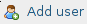

Install on GNU/Linux¶


Prerequisites¶
Please refer to your distribution’s documentation to install :
- A webserver (like nginx, Apache, lighttpd or cherokee)
- PHP version > 5.6
- MySQL version > 5.5
- Git (optional)
Tip
If you don’t know how to do that, or can’t update php, have a look at installing eLabFTW on a drop or in a docker container.
Note
I wouldn’t recommend HHVM because Gettext support is not here yet (see this issue).
Getting the files¶
The first part is to get the files composing eLabFTW on your server.
Option 1 : Using git¶
This is the preferred method as it allows easier updating.
Connect to your server with SSH:
$ ssh user@12.34.56.78
cd to the public directory where you want eLabFTW to be installed (can be /var/www, ~/public_html, or any folder you’d like, as long as the webserver is configured properly, in doubt use /var/www)
$ cd /var/www
# make the directory writable by your user (if it's not already the case)
$ sudo chown `whoami`:`whoami` .
Note the . at the end that means current folder.
Get latest stable version via git:
$ git clone --depth 1 https://github.com/elabftw/elabftw.git
(this will create a folder elabftw) The –depth 1 option is to avoid downloading the whole history.
Tip
If you cannot connect, it’s probably the proxy setting missing; try one of these two commands:
$ export https_proxy="proxy.example.com:3128"
$ git config --global http.proxy http://proxy.example.com:8080
SQL part¶
The second part is putting the database in place.
Option 1 : Command line way¶
# first we connect to mysql
$ mysql -u root -p
# we create the database (note the ; at the end !)
mysql> create database elabftw;
# we create the user that will connect to the database.
mysql> grant usage on *.* to elabftw@localhost identified by 'YOUR_PASSWORD';
# we give all rights to this user on this database
mysql> grant all privileges on elabftw.* to elabftw@localhost;
mysql> exit
You will be asked for the password you put after identified by three lines above.
Option 2 : Graphical way with phpmyadmin¶
You need to install the package phpmyadmin if it’s not already done.
Note
It is not recommended to have phpmyadmin installed on a production server (for security reasons).
$ sudo apt-get install phpmyadmin
Now you will connect to the phpmyadmin panel from your browser on your computer. Type the IP address of the server followed by /phpmyadmin.
Example : https://12.34.56.78/phpmyadmin
Login with the root user on PhpMyAdmin panel (use the password you setup for mysql root user).
Create a user elabftw with all rights on the database elabftw.
Now click the Users tab and click:
Do like this:

Final step¶
Finally, point your browser to the install folder (install/) and read onscreen instructions.
For example: https://12.34.56.78/elabftw/install
Please report bugs on github.
~Thank you for using eLabFTW :)